നിത്മളാണ് ഈ അപകടം കാണുന്നതെന്നിൺ എഗ്ലു ചെøുമായിരുന്നു?
117
കൂന്തുകായ്യത്ഥൊരു കരുതൺ
ചിത്രം നിരീക്ഷിണ്ണ√ോ?

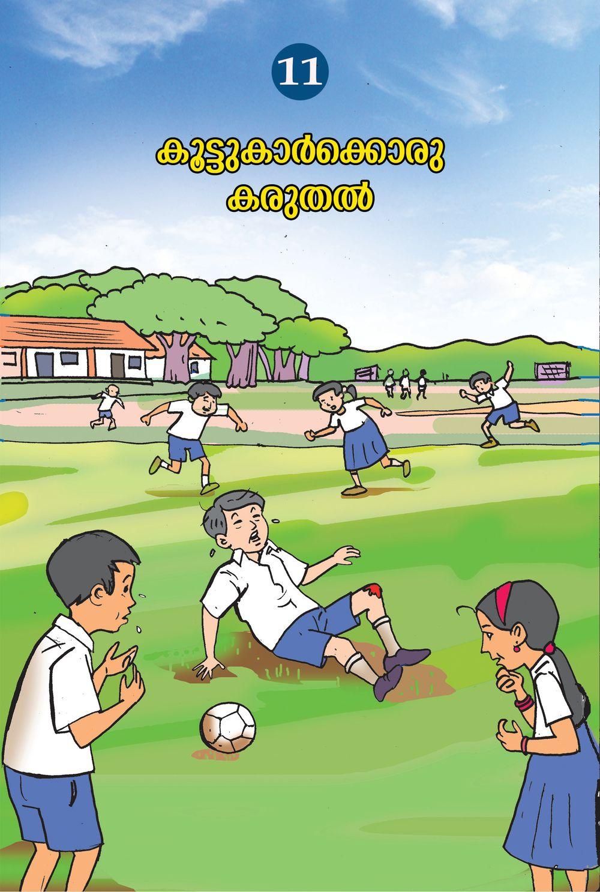
നിത്മളാണ് ഈ അപകടം കാണുന്നതെന്നിൺ എഗ്ലു ചെøുമായിരുന്നു?
117
കൂന്തുകായ്യത്ഥൊരു കരുതൺ
ചിത്രം നിരീക്ഷിണ്ണ√ോ?

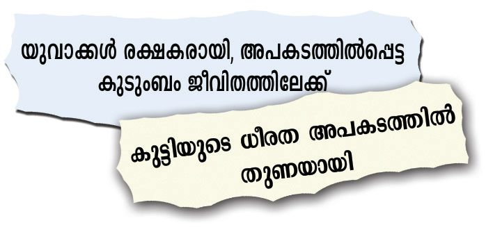
-വായ്യസ്ഥകളുടെ തലത്ഥെന്തുകƒ ശ്ര≤ിത്ഥുക. അപക-ടസ്ഥിൺ∏െന്തവരെ നാം സഹായിത്ഥാറു≠ോ? ഇസ്ഥരം അവസ-രത്മളിൺ നമുത്ഥ് എഗ്ലൊത്ഥെ ചെøാനാവും? $ ആശുപ-ത്രിയിൺ എസ്ഥിത്ഥാം. $ മുതിയ്യന്നവരെ അറിയിത്ഥാം. $ ബ'-∏െന്ത അധികാരികളെ അറിയിത്ഥാം. $ $ നിത്മƒത്ഥോ കൂന്തുകായ്യത്ഥോ എ∏ോഴെന്നിലും അപക-ടത്മƒ സംഭവിണ്ണിന്തു≠ോ? എഗ്ലൊത്ഥെ അപക-ടത്മളാണ് സാധാരണ സംഭവിത്ഥാറു-≈-ത്? എഴുതൂ. തീ∏ൊ-≈ൺ
പരിസ-രപ-ഠനം
അപക-ടത്മƒ
118

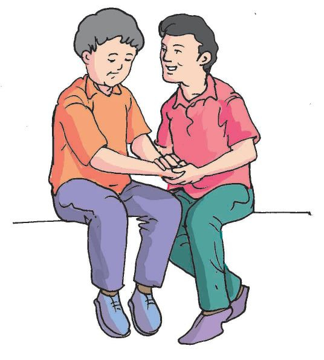
നമുത്ഥും സഹായിത്ഥാം അപക-ടസ്ഥിൺ∏െന്തവരെ ആശുപത്രിയിൺ എസ്ഥിത്ഥും മുബ്ബ് പരിചരണം ആവശ-്യമ√േ? അപക-ടസ്ഥിൺ∏െന്തയാƒത്ഥ് വൈദ്യസഹായം ലഭിത്ഥുന്നതുവരെ ചെøുന്നപരിച-രണ-മാണ് പ്രഥമശുശ്രൂഷ.
പ്രഥമശുശ്രൂഷ പ്രഥമശുശ്രൂഷ നൺകുന്നതി‚െ പ്രയോജ-നമെഗ്ലൊത്ഥെയാണ്? $
പരിത്ഥി‚െ തീവ്രത കൂടാതിരിത്ഥാ≥.
$
പ്രഥമശുശ്രൂഷ-ക‚െ കടമ-കƒ എഗ്ലൊത്ഥെയാണ്? $ അപക-ടസ്ഥിൺ∏െന്തയാളെ ആശ-്വസി-∏ിത്ഥുക. $ ആവ- ശ ്യമെന്നിൺ എത്രയും വേഗം വൈദ്യസഹായം ലഭ-്യമാത്ഥുക. $ ഓരോ അപ- ക - ട - സ്ഥ ഇനും സ്വീക- ര ഇ- ഏത്ഥ≠ പ്രഥമശുശ്രൂഷയെ കുറിണ്ണ് ശരിയായ അറിവ് നമുത്ഥ് വേ≠-ത√േ?
മുറിവുകƒ ചെറിയ മുറിവുകƒ ഉ≠ായാൺ എഗ്ലാണ് ചെøാറു-≈-ത്? $
മുറിവേ‰ ഭാഗം ശു≤-ജലം കൊ≠് വൃസ്ഥിയായി കഴുകുക.
$
മുറിവേ‰ ഭാഗം ഉയയ്യസ്ഥി-∏ിടിത്ഥുക. 119
കൂന്തുകായ്യത്ഥൊരു കരുതൺ
എ∏ോഴെന്നിലും നിത്മƒത്ഥ് മുറിവേ-‰ിന്തു≠ോ?

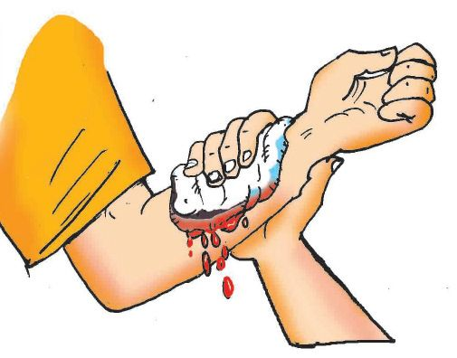
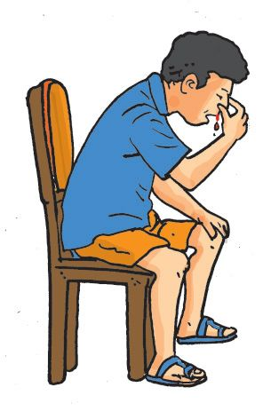
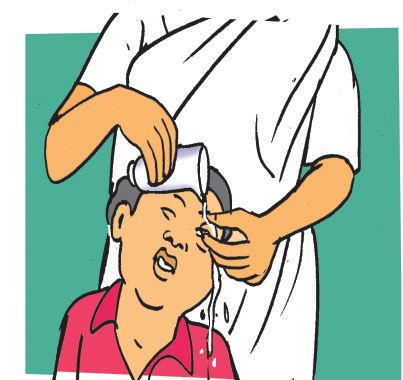
$ ര‡ം വായ്യന്നു- പോകാതിരിത്ഥാ≥ മുറിവേ‰ ഭാഗം വൃസ്ഥി- യ ഉ≈ തുണി ഉപയോഗിണ്ണ് അമയ്യസ്ഥി-∏ിടിത്ഥണം. $ മുറി- വ ഇൺ കന്തപിടിണ്ണ ര‡ം നീത്ഥം ചെø-രുത്. $ മുറിവുകƒ തുറന്നുവയ്ത്ഥുന്നത് അണുബാധ ഏൺത്ഥാ≥ ഇടയാത്ഥും. $
വലിയ- മുറിവുക-ളാണെന്നിൺ മുറിവേ-‰-യാളെ സൗകര-്യപ്രദ-മായ രീതിയിൺ ഇരുസ്ഥുകയോ കിടസ്ഥുകയോ ചെøണം.
$
മുറിവേ‰ ആളെ എത്രയും വേഗം ആശുപ-ത്രിയിൺ എസ്ഥിത്ഥണം.
$ പ്രഥമശുശ്രൂഷ ചെøുന്നയാƒ കൈകƒ വൃസ്ഥിയായി കഴുകിയിരിത്ഥണമെന്ന് പറയുന്നതി‚െ കാരണ-മെഗ്ലാണ്?
മൂത്ഥിൺ നിന്ന് ര‡ം വന്നാൺ... $
മുന്നോന്ത് ചായ്ണ്ണ് ഇരുസ്ഥുക.
$
ത≈-വിരലും ചൂ≠ുവിരലും ഉപയോഗിണ്ണ് മൂത്ഥി‚െ അഗ്രഭാഗം അമയ്യസ്ഥി-∏ിടിത്ഥുക.
$
വായിലൂടെ ശ്വസിത്ഥാ≥ നിയ്യദേശിത്ഥുക.
$
സംസാരിത്ഥാതിരിത്ഥാ≥ നിയ്യദേശിത്ഥുക.
$
വൈദ്യസ-ഹായം തേടുക.
കവ്വിൺ പൊടി വീണാൺ...
പരിസ-രപ-ഠനം
കവ്വിൺ പൊടി വീഴുന്നത് സാധാര-ണമാണ്. കവ്വിൺ പൊടി വീണാൺ കവ്വു തിരു-Ω-രുതെന്ന് പറയുന്നതെഗ്ലുകൊ-≠ാണ്? കവ്വിൺ വീണ പൊടി എത്മനെ നീത്ഥം ചെøും? 120

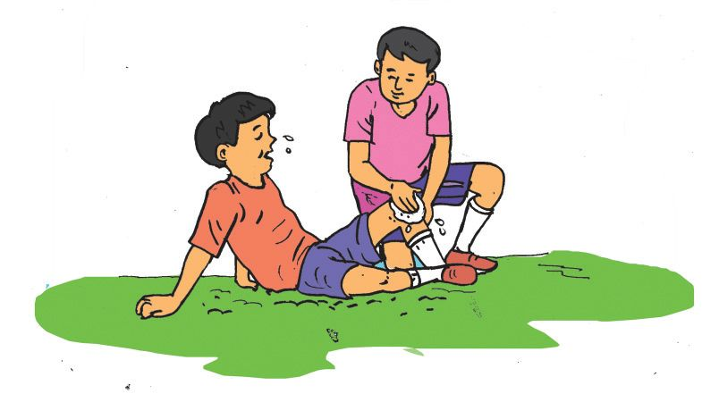
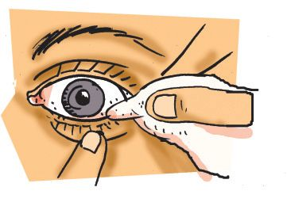
ശു≤- ജ ലം കവ്വിൺ ധാര- യ ആയി ഒഴിണ്ണും വൃസ്ഥിയു≈, നന™ തൂവാല-യുടെയോ മ‰ോ അ‰ം കൊ≠ും എടുത്ഥാ≥ കഴിയി√േ? കവ്വിൺ തറണ്ണുപോയ വസ്തുത്ഥƒ നാം തന്നെ നീത്ഥം ചെøാ≥ ശ്രമി- ത്ഥ ആതെ എത്രയും വേഗം വൈദ്യസഹായം ലഭ-്യമാത്ഥണം.
ഉളുത്ഥ് കളിത്ഥുബ്ബോ- ഏഴാ പടി- ക ƒ ഇറത്മുബ്ബോഴോ നിത്മ- ള ഉടെ കാൺ എ∏ോഴെന്നിലും ഉളുത്ഥിയിന്തു≠ോ? ഉളുത്ഥു പ‰ിയാൺ നിത്മƒ എഗ്ലു ചെøും? $
ഉളുത്ഥിയ ഭാഗം അനത്ഥാതെ ഉയയ്യസ്ഥിവയ്ത്ഥുക.
$
വേദന കുറയ്ത്ഥാ≥ എെസ്പാത്ഥ് വയ്ത്ഥുക. എെസ്പാത്ഥ് ഒരു πാല്ലിക് കൂടിൺ എെസ് ഇന്തശേഷം വെ≈ം ചേയ്യസ്ഥ് അതിന് മുകളിൺ വൃസ്ഥിയു≈ തുണി പൊതി-™ാൺ അത് എെസ് പാത്ഥായി ഉപയോഗിത്ഥാം.
ചതവ് ഭാരമു≈ വസ്തുത്ഥƒ ദേഹസ്ഥു വീഴുബ്ബോഴും മ‰ും ശരീര-സ്ഥിൺ ചതവ് ഉ≠ാകാറു≠√ോ?
വേദനയും നീയ്യത്ഥെന്തും ഒഴിവാത്ഥാ≥ തണുസ്ഥ വെ≈-സ്ഥിൺ മുത്ഥി-∏ിഴി™ തുണിയോ എെസ്പാത്ഥോ ചതവുപ‰ിയ ഭാഗസ്ഥു വയ്ത്ഥാം. $
ചൂടേൺ∏ിത്ഥുകയോ തിരു-Ωുകയോ ചെø-രുത്. 121
കൂന്തുകായ്യത്ഥൊരു കരുതൺ
ചതവിന് എഗ്ലു പ്രഥമശുശ്രൂഷ-യാണ് ചെøാ≥ കഴിയുക?
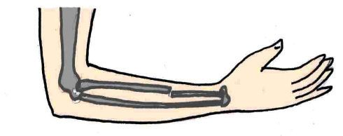
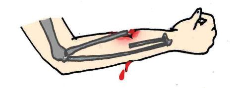
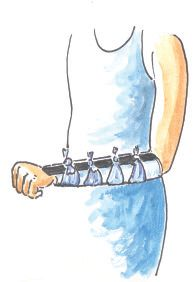
ബോധക്ഷയം ഗ്രൗ≠ിൺ കളിണ്ണു- കൊ-≠ിരിത്ഥെ കൂന്തുകാരന് ബോധക്ഷയ-ം ഉ-≠ായാൺ നിത്മƒ എഗ്ലു ചെøും? $
തലചു-‰ുന്നു എന്ന് അറിയുബ്ബോƒതന്നെ കിടസ്ഥാ≥ സൗകര-്യമൊരുത്ഥണം.
$
കിടസ്ഥിയ ശേഷം കാൺ ഉയയ്യസ്ഥിവയ്ത്ഥണം.
$
ഇറുകിയ വസ്ത്രത്മളാണെന്നിൺ അയണ്ണിടാ≥ ശ്ര≤ിത്ഥണം.
$
ചു‰ും ആളുകƒ കൂടിനിൺത്ഥാതെ ശു≤-വായു ലഭ-്യമാത്ഥണം.
അÿിഭംഗം അപക-ടസ്ഥിൺപെടുബ്ബോƒ ചില-∏ോƒ അÿിത്ഥ് പൊന്തലു-≠ാകുന്നു, എന്നാൺ ചു‰ുമു≈ ശരീര-ഭാഗ-ത്മƒത്ഥ് മുറിവു-≠ാകുന്നി-√. ചില സμയ്യഭത്മളിൺ ഒടി™ അÿി മാംസസ്ഥിൺ തുളണ്ണു കയറി പുറസ്ഥുവരാറുമു≠്. ഈ അവസ-രസ്ഥിൺ ര‡-പ്രവാഹം തടയാനും മുറിവിലേത്ഥ് രോഗാണുത്ഥƒ പ്രവേശിത്ഥാതിരിത്ഥാനും ശ്ര≤ിത്ഥണം.
സ്πി‚് എത്രയും വേഗം വൈദ്യസ-ഹായം ലഭ്യമാത്ഥാ≥ ശ്രമിത്ഥുകയും വേണം. എ√ൊടി™ ഭാഗം കെന്തുബ്ബോƒ
പരിസ-രപ-ഠനം
ഒടി-™ -ഭാഗ-സ്ഥിനു മുകളിലും താഴെയുമു≈ സ'ികƒ അനത്മാതിരിത്ഥാനാണ് സ്πി‚് ഉപയോ- ഗ ഇ- ത്ഥ ഉ- ന്ന - ത ് . സാധാ- ര ണ സ്കെയിൺ, കനംകുറ™ മരത്ഥഷണം, കായ്യഡ് ബോയ്യഡ് തുടത്മിയവ നമുത്ഥ് ഈ ആവ- ശ - ്യ സ്ഥിനായി ഉപയോഗിത്ഥാം.
ഒടി™ ഭാഗം ഇളകാ≥ അനുവ-ദിത്ഥാതെ സംരക്ഷണം നൺകിയ ശേഷമേ അപക-ടസ്ഥിൺ∏െന്തയാളെ മാ‰ാവൂ. അതിന് സ്πി‚ ് ഉപയോഗ-∏െടുസ്ഥാം. 122

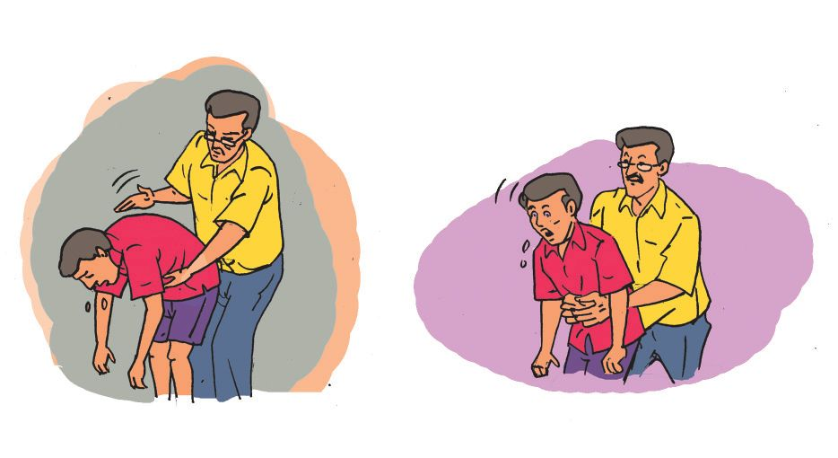
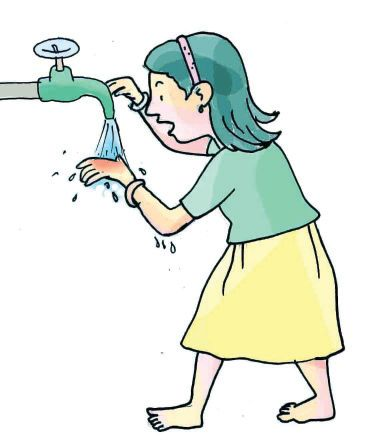
ഭക്ഷണം തൊ≠-യിൺ കുടുത്മിയാൺ ഭക്ഷണം തൊ≠-യിൺ കുടുത്മുന്നത് അപക-ടകരമായ ഒരവ-ÿ-യാണ്. ഈ അവസ-രസ്ഥിൺ വളരെ പെന്തെന്ന് നൺകുന്ന പ്രഥമശുശ്രൂഷ കൊ≠് ജീവ≥ രക്ഷിത്ഥാ≥ കഴി™േത്ഥും. ഒരു കൈകൊ≠് വയറി‚െ മുകƒഭാഗസ്ഥ് അമയ്യസ്ഥുകയും അതേസമയം മറുകൈ കൊ≠് പുറസ്ഥ് ശ‡ിയായി അടിത്ഥുകയും ചെøുക. 3 മുതൺ 5 പ്രാവശ്യം വരെ ഇത്മനെ ചെയ്തിന്തും ഭക്ഷണപദായ്യഥം പുറസ്ഥു വന്നി-√െന്നിൺ എത്രയും വേഗം വൈദ്യസഹായം തേടണം.
പൊ≈-ലേ-‰ാൺ നിത്മƒത്ഥ് എ∏ോഴെന്നിലും പൊ≈-ലേ-‰ിന്തു≠ോ? പൊ≈ൺ ഏൺത്ഥുന്ന സാഹച-ര-്യത്മƒ ഏതൊത്ഥെയാണ്? $ $
ആസിഡ് ദേഹസ്ഥ് വീണ്.
$
പൊ≈-ലേ‰ ഭാഗസ്ഥ് തുടയ്യണ്ണയായി തണുസ്ഥ വെ≈ം ഒഴിത്ഥുക.
$
തീവ്രമായ പൊ≈-ലേ-‰ ഭാഗസ്ഥ് എെസ് വയ്ത്ഥരുത്.
$
പൊ≈ിയ ഭാഗസ്ഥ് ഒന്തി-∏ിടിണ്ണിരിത്ഥുന്ന തുണി നീത്ഥം ചെøാ≥ ശ്രമിത്ഥരുത്.
$
പൊ≈-ലേ‰ ഭാഗസ്ഥ് ഔഷധ-മെന്ന ധാരണയിൺ എഗ്ലെന്നിലും പുരന്തരുത്. 123
കൂന്തുകായ്യത്ഥൊരു കരുതൺ
പൊ≈-ലേ-‰ാൺ എഗ്ലാണ് ചെøേ-≠ത്?

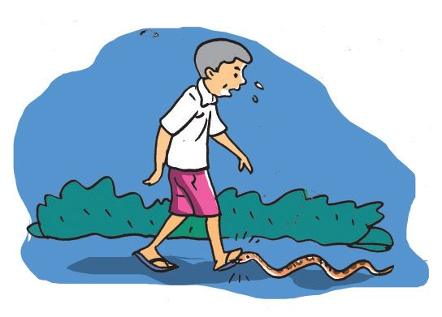
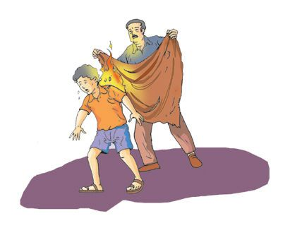
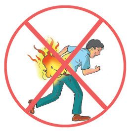
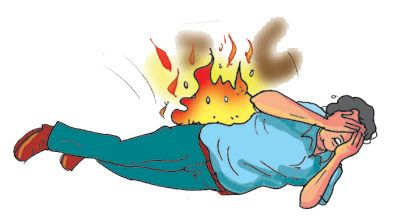
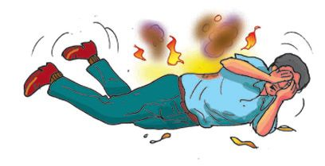
വസ്ത്രസ്ഥിൺ തീ പിടിണ്ണാൺ $
വെ≈ം ഒഴിണ്ണ് തീ കെടുസ്ഥാ≥ ശ്രമിത്ഥുക.
$
നിലസ്ഥു കിടന്ന് ഉരുളുന്നത് തീ കെടുസ്ഥാ≥ സഹായ-കമാണ്.
$
പരിഭ്രമിണ്ണ് ഓടാ≥ അനുവ-ദിത്ഥരുത്; കാ‰ിൺ തീ ആളിത്ഥസ്ഥും.
$
കന്തിയു≈ പുത∏ോ ചണണ്ണാത്ഥോ കൊ≠് പെന്തെന്ന് പൊതിയുക.
പൊ≈ൺ ഒഴിവാത്ഥാ≥ എഗ്ലൊത്ഥെ മു≥കരുതലുകളാണ് നമുത്ഥ് എടുത്ഥാ≥ കഴിയുക? ചയ്യണ്ണചെയ്ത് പരിസരപുസ്തക-സ്ഥിൺ എഴുതുമ-√ോ.
പാബ്ബുകടി പാബ്ബുക-ടിയേ-‰-യാƒത്ഥ് എഗ്ല് പ്രഥമശുശ്രൂഷ-യാണ് നൺകാ≥ കഴിയുക? $
പാബ്ബുക-ടിയേ‰യാളെ സമാധാനി-∏ിത്ഥുക.
$
പാബ്ബുക-ടിയേ‰യാളെ ഓടാനോ നടത്ഥാനോ അനുവ-ദിത്ഥരുത്.
$
കടിയേ‰ ഭാഗം വൃസ്ഥിയായി കഴുകുക.
$
കടിയേ‰ ഭാഗം താഴ്സ്ഥി വയ്ത്ഥാ≥ ശ്ര≤ിത്ഥണം.
$
എത്രയും വേഗം വൈദ-്യസ-ഹായം ലഭ-്യമാത്ഥുക.
പരിസ-രപ-ഠനം
പാബ്ബുക-ളിൺ വിഷമു-≈-വയും വിഷമി-√ാസ്ഥവയുമു≠്. കടിണ്ണ പാബ്ബിനെ തിരി- ണ്ണ - റ ഇ- യ ഉ- ന്ന ത് ചികി' എളു-∏-മാത്ഥും. 124

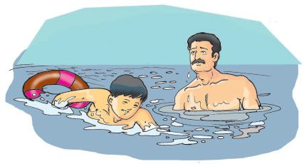
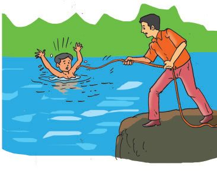
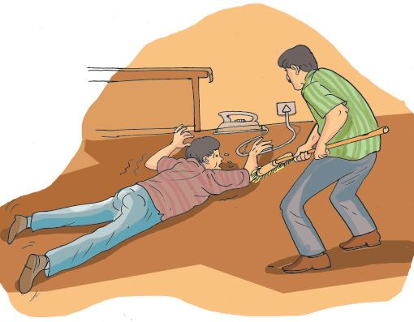
പാബ്ബു- ക - ട ഇ- ഏയൺത്ഥാ- ത ഇ- ര ഇ- ത്ഥ ആ≥ എഗ്ലൊത്ഥെ മു≥ക- ര ഉ- ത - ല ഉകƒ എടുത്ഥണം. എഴുതൂ.
വെ≈-സ്ഥിൺ വീണു-≠ാകുന്ന അപകട-ത്മƒ നീഗ്ലൺ അറിയുന്നത് വെ≈-സ്ഥിൺ വീണ് സംഭവിത്ഥുന്ന അപക-ടത്മƒ കുറയ്ത്ഥാ≥ സഹായിത്ഥി√േ? നീളമു≈ കയറോ തുണിയോ തടിത്ഥഷ-ണമോ ഇന്തുകൊടുസ്ഥ് അപക-ടസ്ഥിൺ∏െന്തയാളെ കരയ്ത്ഥെസ്ഥിത്ഥാ≥ ശ്രമിത്ഥാം. വെ≈-സ്ഥിൺ മുത്മി-∏ോയ ആളെ രക്ഷിത്ഥാ≥ പുറ- എ∏- ട ഉ- ഏബ്ബാƒ സ്വഗ്ലം സുരക്ഷ ശ്ര≤ിത്ഥണം. നീഗ്ല-ൺ അറിയി-√െന്നിൺ വെ≈-സ്ഥിൺ ചാടരുത്. സഹായ-സ്ഥിന് ആƒത്ഥാരെ വിളിത്ഥാ≥ ശ്ര≤ിത്ഥുമ-√ോ.
വൈദ-്യുതാഘാതം നാം നിരവധി വൈദ-്യുത ഉപക-രണ-ത്മƒ കൈകാര്യം ചെøാറു-≠√ോ. അവ കൈകാര്യം ചെøുബ്ബോƒ വളരെയേറെ ശ്ര≤ിത്ഥണം. വൈദ-്യുതാഘാതം ഏ‰ ഒരാളെ രക്ഷിത്ഥാ≥ നമുത്ഥ് എഗ്ലൊത്ഥെ ചെøാനാവും? $
സ്വിണ്ണ് ഓഫ് ചെയ്ത് വൈദ്യുത-പ്രവാഹം തടയുക. വൈദ്യുത-പ്രവാഹം തടയാ≥ കഴി-™ി-√െന്നിൺ വൈദ്യുതി കടസ്ഥിവിടാസ്ഥ കൈയുറയോ ഉണത്മിയ തടിത്ഥ - ഷ ണമോ ഉപയോഗിണ്ണ് ആഘാതമേ‰ ആളെ വൈദ്യുത-ബ-'-സ്ഥിൺ നിന്നും മാ‰ാ≥ ശ്രമിത്ഥുക.
വൈദ-്യുതാഘാതം ഏൺത്ഥാതിരിത്ഥാ≥ എഗ്ലൊത്ഥെ മു≥ക- ര ഉ- ത - ല ഉ- ക ƒ എടുത്ഥാം? ചയ്യണ്ണചെയ്ത് പരിസര പുസ്തക-സ്ഥിൺ എഴുതൂ. 125
കൂന്തുകായ്യത്ഥൊരു കരുതൺ
മ‰േ- എതാത്ഥെ സാധ- ന - ത്മ ƒ ഉപയോഗിത്ഥാം? സഹായിത്ഥുന്ന ആളി‚െ സുരക്ഷിത-ത്വം പ്രധാനമാണ്.

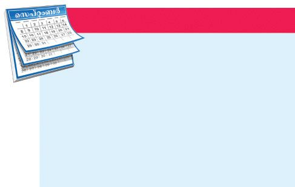
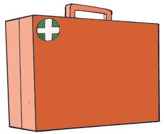
പ്രഥമശുശ്രൂഷ∏െന്തി (എശൃ ഏെഅശറ ആീഃ) എഗ്ലൊത്ഥെ സാധ- ന - ത്മ - ള ആണ് പ്രഥമശുശ്രൂ- ഷ യ് ത്ഥ ് ആവ- ശ - ്യ - മ ആയി വരുന്നത്? ഇസ്ഥരം സാധന-ത്മƒ കരുതിവയ്ത്ഥുന്ന പ്രഥമശുശ്രൂഷ-∏െന്തി വിദ-്യാലയസ്ഥിലും വീന്തിലും ഉ≠-√ോ? പരിശോധിണ്ണു നോത്ഥൂ. നമുത്ഥൊരു പ്രഥമശുശ്രൂഷ∏െന്തി തയാറാത്ഥാം. എഗ്ലൊത്ഥെ സാധന-ത്മƒ ഉƒ∏െടുസ്ഥണം? $ അണുനാശിനി $ കോന്തച്ച $ ബാ≥ഡേജ്
പ്രഥമ-ശുശ്രൂഷാദിനം
$
അപക-ടത്മƒ ആയ്യത്ഥും എ∏ോഴും സംഭവിത്ഥാം. പ്രഥമ ശുശ്രൂഷ വില-∏െന്ത മനുഷ്യജീവ≥ രക്ഷ-∏െടുസ്ഥാ≥ സഹായിത്ഥുന്നു.
പ്രഥമ- ശ ഉ- ്രശൂ- ഷ - യ ഉടെ പ്രാധാന്യം ബോധ്യ-∏െടുസ്ഥുന്നതിനായി എ√ാ വയ്യഷവും സെപ്തംബറിലെ ര≠ാം ശനിയാഴ്ച പ്രഥമ-ശുശ്രൂഷാദിന-മായി ആചരിത്ഥുന്നു.
പ്രഥമശുശ്രൂഷ നΩുടെ കടമ.
പരിസ-രപ-ഠനം
പ്രധാന പഠന-നേന്തത്മƒ $
അപക-ടമു-≠ാകാ-≥ സാധ്യത-യു≈ സμയ്യഭത്മƒ ക≠െസ്ഥി പന്തിക-∏െടുസ്ഥുന്നു.
$
പ്രഥമ-ശുശ്രൂഷ-യുടെ പ്രാധാന്യം ക≠െസ്ഥി പറയുന്നു.
$
പ്രഥമ-ശുശ്രൂഷ എഗ്ലെന്ന് നിയ്യവചിത്ഥുന്നു.
$
ഓരോ അപക-ടസ്ഥിനും എഗ്ലെ√ാം പ്രഥമ-ശുശ്രൂഷ-കƒ നൺകണമെന്ന് വിശദീക-രിത്ഥുന്നു.
$
പ്രഥമശുശ്രൂഷ-∏െന്തി ക്രമീക-രിത്ഥുകയും വേ≠-വിധം പ്രയോജ-ന∏െടുസ്ഥുകയും ചെøുന്നു.
126


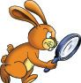
വിലയിരുസ്ഥാം 1.
എഗ്ലിനാണ് അമിത ര‡-സ്രാവ-മു≈ മുറിവിന് മുകളിൺ അമയ്യസ്ഥി∏ിടിത്ഥുന്നത്? മ.
വേദന കുറയ്ത്ഥാ≥. യ. രോഗാണുത്ഥളെ ഒഴിവാത്ഥാ≥. ര. ര‡-സ്രാവം കുറയ്ത്ഥാ≥. 2.
കൈ പൊ≈ിയാലുടനെ... മ.
എെസ് വയ്ത്ഥണം. യ. ടൂസ്ഥ് പേല്ല് പുരന്തണം. ര. ഒഴുകുന്ന വെ≈-സ്ഥിൺ തണു-∏ിത്ഥണം.
1.
ആരോ- ഗ ്യപ്രവയ്യസ്ഥ- ക - ര ഉടെ നേതൃ- ത ്വ- സ്ഥ ഇൺ പ്രഥമശുശ്രൂഷാ പരിശീലന ക്ലാസ് സംഘടി-∏ിത്ഥുക.
2.
പ്രഥമശുശ്രൂഷ-യുടെ പ്രാധാന്യം, രീതി എന്നിവ വ്യ-‡-മാത്ഥുന്ന തരസ്ഥിലു≈ പ്രഥമശുശ്രൂഷാ ചായ്യന്ത്, പോല്ലയ്യ എന്നിവ നിയ്യമിണ്ണ് പ്രദയ്യശി-∏ിത്ഥുക.
3.
വിവിധ അപക-ടത്മƒ സംബ-'ിണ്ണ പത്രവായ്യസ്ഥകƒ ശേഖരിണ്ണ് "പ്രഥമശുശ്രൂഷ∏തി∏്' തയാറാത്ഥുക.
4.
പ്രഥമ-- ശുശ്രൂഷാദിന-സ്ഥോട-നുബ-'ിണ്ണ് പ്രഥമശുശ്രൂഷ-യുടെ പ്രാധാന്യം വ്യ-‡-മാത്ഥുന്ന ലഘുനാടകം അവത-രി-∏ിത്ഥുക.
5.
പ്രഥമശുശ്രൂഷ സംബ- ' ഇണ്ണ ചിത്ര- ത്മ ƒ, വീഡി- ഏയാ- ക ƒ, വിവര-ത്മƒ എന്നിവ ശേഖരിത്ഥുക.
127
കൂന്തുകായ്യത്ഥൊരു കരുതൺ
തുടയ്യപ്രവയ്യസ്ഥനത്മƒ